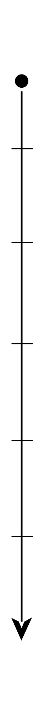

Tijdlijn
Een klein overzichtje van mijn afgelopen jaren als volleyballer in een tijdlijn.
2013
Eerste keer mee trainen en mee spelen met het 1ste dames team van VIVES
2019
VIVES verlaten om een stapje hoger te proberen bij VVUtrecht, hier heb ik uiteindelijk 4 seizoenen gespeeld

2008
Eerste keer volleyballen!
2014
Officieel een buiten speler van het 1ste dames team van VIVES
2023
Weer terug bij mijn oude club VIVES!